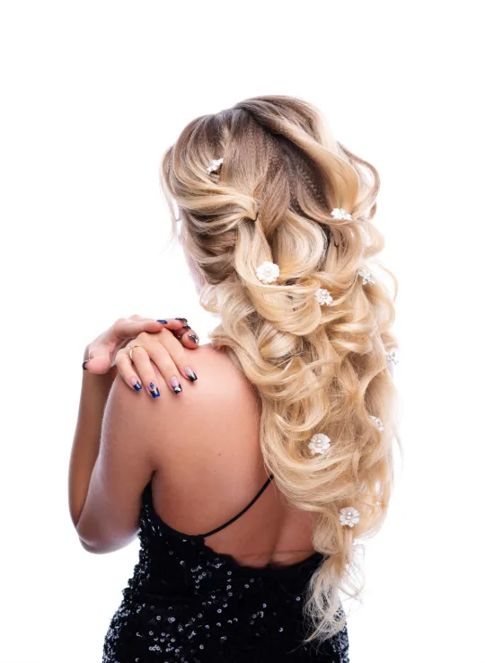
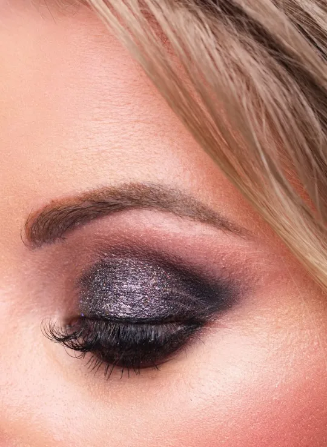
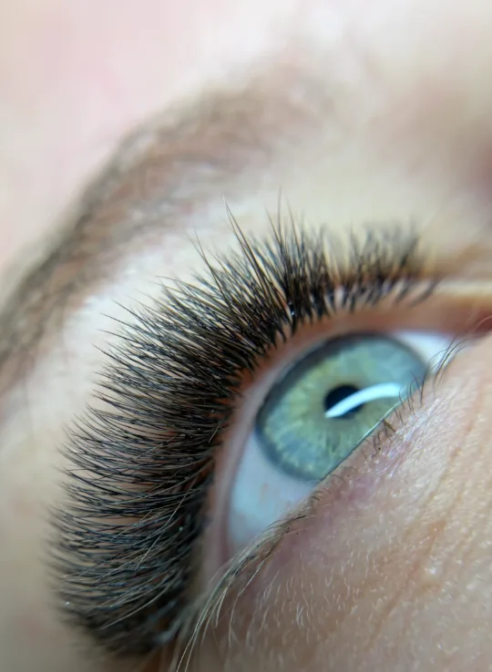
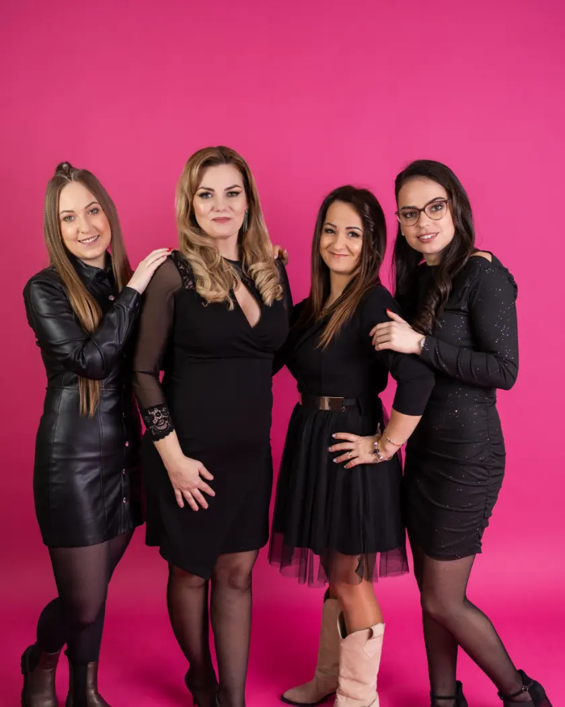

Coafură, machiaj, tatuaj cosmetic, tratamente faciale și gene — în mâinile a cinci specialiști, într-un singur salon. Și toată experiența pe care o transmitem mai departe.



în salon
într-un singur loc
și machiaj
(26 de recenzii)
O adresă, cinci specialiști
Salonul Aphrodite din Odorheiu Secuiesc, de pe strada Bethlen Gábor, îi așteaptă pe cei care nu vor doar o tunsoare, ci și sentimentul cu care ies apoi pe ușă.
Trei coafeze, o cosmeticiană-make-up artist și o stilistă de gene lucrează în același salon. Tuns, vopsit și balayage, coafură și machiaj de mireasă, tatuaj cosmetic, tratamente faciale, extensii de gene și epilare — nu trebuie să alergi prin mai multe locuri.
Ce ne deosebește: transmitem mai departe ce știm. Ciubotaru Katalin este coafeză de douăzeci de ani, și-a început cariera la Aphrodite și astăzi lucrează aici și ca instructor — cele două coafeze tinere ale echipei au învățat meseria de la ea.

Servicii
Opt domenii și două cursuri — fiecare cu specialistul său.
Coafură
Tuns, vopsit, șuvițe și balayage pentru femei și bărbați — în mâinile a trei coafeze.
Katika · Gabi · Zsuzsa IICoafuri de ocazie și de mireasă
Cocuri, bucle și împletituri pentru nuntă, absolvire sau bal — proba o stabilim din timp.
Katika · Gabi · Zsuzsa IIIMachiaj de mireasă
Machiaj pentru ziua cea mare, care rezistă în poze și toată seara.
Klára IVMachiaj de ocazie
O apariție strălucitoare la evenimente importante — în poze și toată seara.
Klára VTatuaj cosmetic
Trăsături armonioase, personalizate, pentru dimineți fără griji.
Klára VITratamente faciale și ale pielii
Regenerarea profundă a pielii fără operație, tratamente de curățare și hidratare, Carbon Peeling.
Klára VIIGene și sprâncene
Extensii de gene de la 1D la 6D, lifting, laminarea și conturarea sprâncenelor — potrivite privirii tale.
Barbi · Klára VIIIEpilare
Epilare blândă și precisă cu ceară clasică sau cu ceară de zahăr — pentru femei și bărbați.
Barbi · Klára IXCurs de coafură
De la cursul de o zi la formarea de un an — cu Ciubotaru Katalin, în salon.
Katika XCurs de machiaj
Curs de machiaj de o zi și curs individual — ca să-ți iasă și acasă.
KláraEchipa
Dă clic pe portret și se deschide lista ei de prețuri. Prezentarea o găsești sub nume — în propriile ei cuvinte.
Spălat · tuns · uscat
Uscat, styling
Vopsit și șuvițe
Vopsea Londa. Prețul: prețul vopselei + 45 RON aplicare (vopseaua la gram: 1 g = 1,5 RON). Prețul celorlalte servicii (de ex. tuns, uscat) se adaugă la acesta.
Prețurile sunt în lei (RON), durata este orientativă.
La Klára prețul depinde de tratament și se stabilește personal. Sun-o la 0745 957 598 .
Machiaj
- Machiaj de mireasă
- Machiaj de ocazie
Curs de machiaj
- Curs de machiaj de o zi
- Curs individual de machiaj
Tatuaj cosmetic
- Tatuaj cosmetic — sprâncene, pleoape, buze
- Îndepărtarea și corectarea tatuajelor cu laser
Tratamente faciale și ale pielii
- Tratament cu fir de aur și fermitate
- Carbon Peeling
- Tratament facial
- Tratamente corporale
Gene și epilare
- Extensii de gene
- Vopsit gene
- Epilare cu ceară de zahăr
- Epilare bărbați (spate, piept)
Extensii de gene
| Volum | Aplicare · RON | Întreținere · RON |
|---|---|---|
| 1D | 180 | 130 |
| 2D | 190 | 140 |
| 3D | 200 | 150 |
| 4D | 210 | 160 |
| 6D | 220 | 170 |
Aplicare 120 min, întreținere 90 min. Lungime 6–13 mm, curbură: C, CC, D, M, L. Întreținerea se poate face cel mult 4 săptămâni, apoi e nevoie de un set nou.
Lifting și îndepărtare
Sprâncene
Epilare
Prețurile sunt în lei (RON), durata este orientativă.
Spălat · tuns · uscat
Uscat, styling
Vopsit și șuvițe
Vopsea Londa și pudră decolorantă la gram: 1 g = 1,5 RON. Îndreptare permanentă: 1 g = 4,6 RON.
Prețurile sunt în lei (RON), durata este orientativă.
Spălat · tuns · uscat
Uscat, styling
Vopsit și șuvițe
Vopsea Londa și pudră decolorantă la gram: 1 g = 1,5 RON. Îndreptare permanentă: 1 g = 4,6 RON.
Prețurile sunt în lei (RON), durata este orientativă.
Lucrările noastre
Lucrări reale din salon și din ședința foto — nu imagini de catalog.


Curs de coafură
Aphrodite nu doar practică meseria — o și predă.
Ciubotaru Katalin predă coafura de la cursul de o zi până la formarea de un an, lângă lucrările reale ale salonului. Sebestyén Zsuzsa și Kele Gabriella au absolvit la ea — astăzi amândouă lucrează aici.
Te așteptăm cu drag
Programează-te online în câteva clicuri sau contactează direct specialistul, telefonic sau pe WhatsApp.
535600 Odorheiu Secuiesc